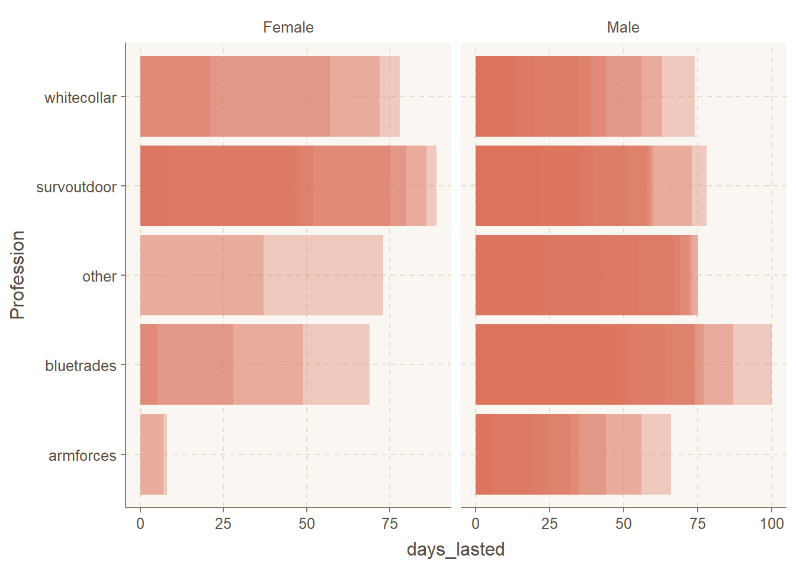
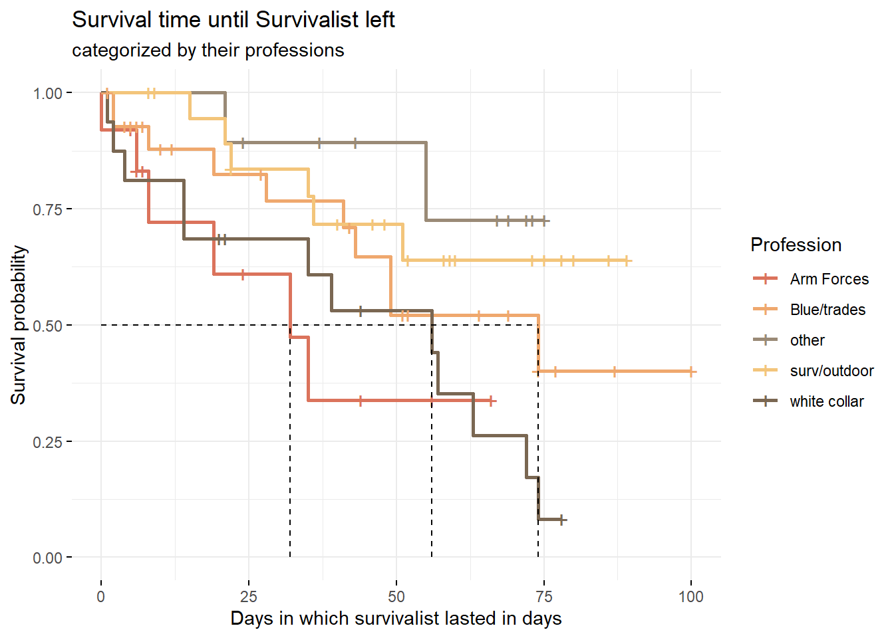
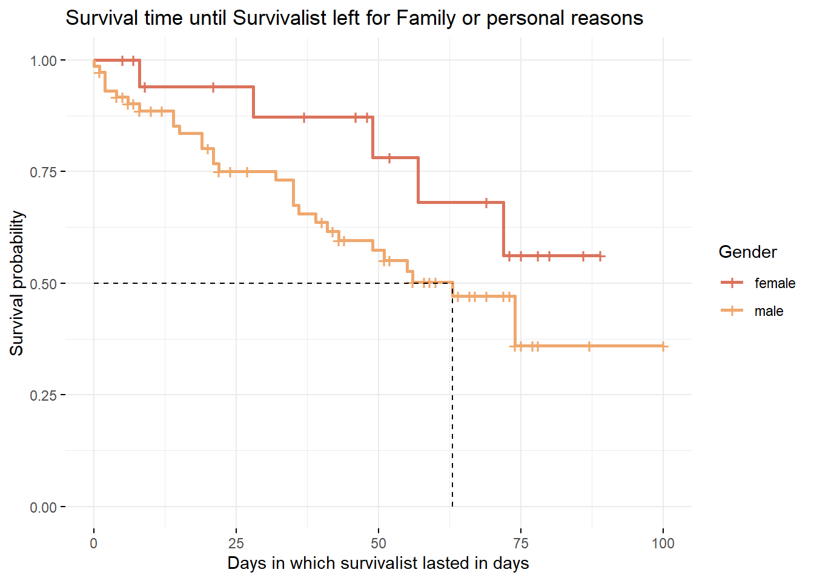

Tidy Tuesday is a weekly social data project in the R programming language community, created by R for Data Science authors Hadley Wickham and Mara Averick. The project involves posting a new dataset on the Tidy Tuesday gitHub repository every Tuesday, along with a set of questions or challenges related to the data. The aim of Tidy Tuesday is to provide a fun and collaborative way for R users to improve their data analysis and visualization skills, and to share their work with the broader community.
What data I decided to use for one of the Tidy Tuesday?
The Tidy Tuesday I decided to investigate is the Alone data set.This dataset contains information about the participants and their progress in the Alone TV series. The data set includes 8 seasons of the show, with each season consisting of a different set of contestants who are dropped off in a remote wilderness location and must survive alone. The data set includes information such as the contestant’s name, age, gender, occupation, location, survival equipment, and duration of their stay. The project provided a valuable opportunity for me to practice their data wrangling, visualization, and analysis skills using real-world data in a fun and engaging way.
First, let me show you the data.
Highlighted are the columns that I used during my data analysis.
I found that age, gender, and where someone was located did not have any significance during the first round of exploring. I then decided to narrow down my scope to find out the survival rate between gender and professions.
point out
While exploring the quantifying aspect of the data set I first noticed there were almost 3 times as much gendered males then female. In fig.2 the columns represent the seasons and the rows represent how many males and females participated.
However, even though there is an unbalance in gender I was able to use the column to for survival analysis, and find the average days lasted for both genders.
Gender, how well they did each season and their days lasted, as well as what place they recived (results)
Check out the Code!
library(ggplot2)library(gridExtra)
Attaching package: 'gridExtra'
The following object is masked from 'package:dplyr':
combine
Check out the Code!
plot1<-alone%>%mutate(season =as.factor(season))%>%ggplot(aes(season, days_lasted, fill = gender))+facet_wrap(~gender, scales ="free_x")+geom_bar(stat ="identity", position ="dodge",alpha =0.35) plot2<-alone%>%mutate(result =as.factor(result))%>%ggplot(aes(result, days_lasted, fill = gender))+facet_wrap(~gender, scales ="free_x")+geom_bar(stat ="identity", position ="dodge",alpha =0.35) grid.arrange(plot1,plot2)
Since there were no gendered females on season 1, there is no results.
Survival Rate
Check out the Code!
alone1 = alone%>%mutate(status =ifelse(medically_evacuated =="TRUE",1,0))al = alone1 %>%mutate(left=days_lasted,right=ifelse(status==1,days_lasted,NA))survObject=Surv(al$left,al$right,type="interval2")km=survfit(survObject~al$gender) # over all, give table. #summary(km)mod1<-ggsurvplot(fit=km, data=al,risk.table = F,conf.int=F,surv.median.line ="hv",legend="right",legend.title ="Gender",legend.labs =c("female","male"),ggtheme =theme_minimal()) +labs(title="Survival time until survivalist needed medical exacuation",x="Days in which survivalist lasted in days" )
Further exploring, I decided to work survival rates between gendered females and males by either medically evacuated, left for medical health, personal, or family reasons. I found minor significants in the survival rate of (….. ……)
Lastly, since was not satisfied with my exploration I thought that I would drop gender,age,and where contestant lived and decided to bin them by categorized the professions into white-collar, outdoor survivalists, blue-collar tradesmen, armed forces, and others, mostly entrepreneurs. As I know this cause some bias, and I made sure to do the best of my abilities I could, with the research and global knowledge I have
Check out the Code!
alone2 = alone%>%mutate(status =ifelse(reason_category =="Medical / health",1,0))al2 = alone2 %>%mutate(left=days_lasted,right=ifelse(status==1,days_lasted,NA))survObject2=Surv(al2$left,al2$right,type="interval2")km2=survfit(survObject2~al2$gender) # over all, give table. #summary(km2)mod2<-ggsurvplot(fit=km2, data=al2,risk.table = F,conf.int=F,surv.median.line ="hv",legend="right",legend.title ="Gender",legend.labs =c("female","male"),ggtheme =theme_minimal()) +labs(title="Survival time until Survivalist left because of a medical and or health issue",x="Days in which survivalist lasted in days" )
Check out the Code!
alone3 = alone%>%mutate(status =ifelse(reason_category =="Family / personal",1,0))al3 = alone3 %>%mutate(left=days_lasted,right=ifelse(status==1,days_lasted,NA))survObject3=Surv(al3$left,al3$right,type="interval2")km3=survfit(survObject3~al3$gender) # over all, give table. #summary(km3)mod3<-ggsurvplot(fit=km3, data=al3,risk.table = F,conf.int=F,surv.median.line ="hv",legend="right",legend.title ="Gender",legend.labs =c("female","male"),ggtheme =theme_minimal())+labs(title="Survival time until Survivalist left for Family or personal reasons",x="Days in which survivalist lasted in days" )
Check out the Code!
mod1

Check out the Code!
mod2

Check out the Code!
mod3

Check out the Code!
alonedf<-alone2%>%mutate(profcat =case_when(alone2$profession %in%c( "Corrections Officer","US Army Guard and Former US Coast Guard","Writer and Former Missionary","Former US Sniper","Law Enforcement and Former Air Force","Former Wildland Firefighter","Former US Army","Retired Green Beret","SERE Specialist","Search and Rescue K9 Handler","Sniper & Survival Skills Instructor","Retired Military/Homesteader","Prescribed Fire Practitioner","Law Enforcement") ~"armforces", alone2$profession %in%c( "Research Assistant","Author","Survivalist and Wildlife Therapist/Natural Healing","Anthropologist","Biologist & Forrester","Herbalist","Accountant","High School Teacher","Environmental Scientist","Psychotherapist","Industrial Project Manager","Accountant","Biologist","Educational Consultant","Physician","Community Leadership")~"whitecollar",alone2$profession %in%c("Butcher","Carpenter","Electrician","Boat builder","Drywaller","Retired Shipping Driver","Outdoor Educator","Builder","Fisherman","Construction Foreman","Equipment Operator","Blacksmith","Construction","Traditional Bowyer","Tool Maker","Prehistoric Leather Specialist","Professional Bowyer & Hunter","Hunting Guide","Oil Rig Roughneck","Alpaca Shearer, Treehouse builder","Commercial Fisherman","Hunting and Packgoat Guide")~"bluetrades", alone2$profession %in%c("Survivalist and Wildlife Therapist/Natural Healing","Aboriginal Skills Instructor","Survival Instructor","Homesteader & Carpenter","Bushcraft Instructor","Trapper","Wilderness Skills Instructor","Bushcraft Instructor", "Outdoor Educator","Wilderness Living Skills Instructor","Ancestral Skills Teacher ","Wilderness Guide","Homesteader","Primitive Technology Instructor","Ancestral Living Skills Instructor","Winter Wilderness Expedition Operator","Primitive Skills Instructor","Primitive Skills School Owner","Homesteader","Wilderness Survival Instructor","Outdoor Professional","Wilderness/Primitive Skills Instructor","Wilderness Survival Instructor","Wilderness Expedition Guide")~"survoutdoor", TRUE~"other"))table(alonedf$profcat)
armforces bluetrades other survoutdoor whitecollar
13 30 12 23 16
After exploring the Alone Tidy Tuesday data set, I conducted an analysis to determine the survival rate of male and female participants. I examined the reasons why contestants were either medically evacuated or left for medical health or personal family reasons, and checked if there was any significant difference in the arrival rate between males and females. However, I did not find any interesting findings related to survival rate.
Therefore, I decided to investigate the professions of the contestants and see if there were any significant differences in the survival rate among different professions. I categorized the professions into white-collar, outdoor survivalists, blue-collar tradesmen, armed forces, and others, mostly entrepreneurs. I found that outdoor survivalists and blue-collar tradesmen were more likely to survive longer than armed forces and white-collar workers. This was an interesting finding as it confirmed some assumptions that people might have about survival skills, and it was exciting to have an analysis that could prove these assumptions.
During this data exploration, I was aware of the potential biases that could arise from categorizing the professions, so I tried to make sure that I did it in the most ethical way possible. When there were things that I didn’t know, I put them into the “Other” category to avoid any unintentional biases. Overall, this project provided a great opportunity for me to use my data wrangling, visualization, and analysis skills, and I learned a lot from this experience.